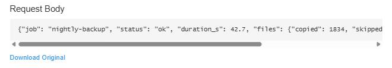
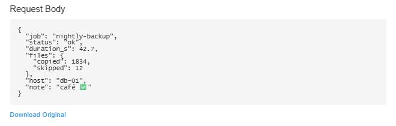

Seal the starting point
Record the baseline scope, environment, and failures so inherited problems are never mistaken for regressions.
Inspect baseline →LIVE EVIDENCE WORKFLOW IBM BOB KIT
OnRamp is an IBM Bob kit for joining an unfamiliar codebase. It records which tests already fail, reproduces a bug with a failing test first, and verifies the fix without ever mistaking an old failure for a new one.
Built for AngelHack × IBM, “Building with IBM Bob”, Theme 1: explore an unfamiliar app, fix a real bug, add a feature. What did not work is listed in corrections and limitations.
| Baseline | 1,761 | Healthchecks application at upstream 0968fa2; the kit recorded it at e10db36. 29 already fail on Windows (AF_UNIX sockets, a Linux-only strftime format, a DST switch) |
|---|---|---|
| After Bob's fix and feature | 0 | regressions in an independent full run of 1,767 tests on the same Windows machine, against the pinned baseline |
| Blind fix | 1 | line changed in hc/api/transports.py, the same line the maintainer changed later |
| Generated through IBM Bob | 23 | commits, each ending Generated-by: IBM Bob. The upstream test suite passed in recorded Linux CI run 38460743005; the 29 baseline failures are Windows-only. |
Pick a later test run of Healthchecks and OnRamp classifies it against the baseline, right here in your browser.
Baseline: Healthchecks at the pinned upstream commit, 1,761 tests, 29 failing on Windows. With focus in the demo, keys 1–4 pick a run.
A decorative visual index of outcomes, not a dependency graph: every dot is one Healthchecks test, placed in test-id order and coloured by how the selected run classifies it. Position carries no meaning, and individual dots are not required to interpret the result; the counts on the left are authoritative.
The runs are real Healthchecks test logs, except the two marked synthetic: those are classifier safety tests built from the real full run (one test flipped to failing; one log cut off), not production evidence, normalized to versioned JSON by the Python implementation (onramp_normalize.py). This page only classifies that JSON, and CI checks on every push that the browser and Python agree exactly. It is not a live IBM Bob session: the full kit runs inside Bob IDE.
The browser classifier and the Python implementation (py/onramp_normalize.py) give identical results on every golden case, checked by CI on each push: full run (29 inherited, 0 fixed, 0 regressions), targeted run (1,761 not run, 0 fixed), synthetic regression (1), crashed run and unsupported schema (both inconclusive). IBM Bob's own corrected classifier in the kit (gen_report.py, 2a527f8) agrees on the full, regression and crash cases; it reports the docstring-bearing targeted run as inconclusive, a known limitation listed in the corrections file.
Raw logs: baseline, full run, targeted run, normalized JSON, classifier.js. Local paths in the logs are replaced with <repo> and <home>.
Before Bob changed a line, OnRamp recorded which tests already fail on this Windows machine, so red tests are never blamed on the fix. On Linux CI the same suite passes; the 29 are Windows-only.
e10db36; app code equals upstream 0968fa2| Error type | Tests | Why it fails here |
|---|---|---|
| AttributeError | 26 | Signal integration tests need socket.AF_UNIX, which Windows lacks |
| ValueError | 2 | A Linux-only strftime format (e.g. %-d) |
| AssertionError | 1 | DST test needs time-zone switching, unavailable on Windows |
Fingerprint recorded at kit commit e10db36, whose application code (hc/, templates/, static/) is identical to upstream Healthchecks 0968fa2; Windows, Python 3.13.2. All 29 are Windows-only; on Linux CI the same suite passes.
The first baseline was captured before the kit's parser fix (8165552) and stored error types as "Unknown"; Bob re-classified a fresh run in baseline_reclassified.json. Its error types match Claude's independent run exactly.
Healthchecks was pinned one commit before its maintainer fixed a real webhook bug. The issue-specific brief was sealed before the fix work; after Bob's fix was committed, we revealed the maintainer's.
The symptom report was hashed before the issue-specific work began, so it could not be adjusted after the fix.
21:05:38 UTC, SHA-25612c482dc2578402a…benchmark_webhook-205.json"sealed_at": "2026-10-11T21:05:38.561200+00:00""brief_sha256": "12c482dc2578402a5c77c5ae60bca4f5…"
Bob wrote a test that reproduces the bug and fails on the unfixed code.
AssertionError: 3 != 1pre_fix_webhook-205.txtFAIL: test_webhooks_accept_http_205AssertionError: 3 != 1FAILED (failures=1)
One line changed in hc/api/transports.py. The new test passes, and the later full run shows no regressions.
git show 5f16187 -- hc/api/transports.py, post_fix_webhook-205.txt- if r.status_code not in (200, 201, 202, 204):+ if r.status_code not in range(200, 300):Ran 1 test in 0.007sOK
Only then was the maintainer's own fix revealed: the same line, with a narrower accepted-status policy.
Corrected comparison: the upstream patch adds only status 205.reference_upstream_0a9bff9.patch+ if r.status_code not in (200, 201, 202, 204, 205):# annotation: same line as Bob's fix; upstream adds only 205
Terminal panels are excerpts copied from the evidence files named in each panel (whitespace collapsed; the line starting with # is our annotation). They are not a live session.
Our brief said "a 2xx response such as 205" should succeed, and Bob accepted every 2xx; the maintainer added only 205, because HttpTransport is shared by about 25 integrations. Corrected evidence report, historical report (superseded: it counted 29 never-run tests as fixed).
While testing Healthchecks with a personal project, I set up a webhook integration whose endpoint answers with HTTP 205 (Reset Content). When a check changes state, my endpoint receives three identical requests, and the integration is marked as failed with "Received status code 205". I reproduced it locally: the integration's "Test" button also reports an error for the same endpoint, although it only sends one request. Expected: a 2xx response such as 205 means the notification was delivered; it should not be retried or reported as a failure.
Feature #1090: JSON request bodies are shown indented, while Download Original still serves the exact bytes. The evidence below demonstrates the formatting and non-ASCII preservation behavior.


Captured from local development servers with a throwaway test check. An independent check found json.dumps escaping "café"; Bob added a test and fixed it (e4032c2).
Profile-driven portability was tested across three TaskFlow runs, a Flask app using plain unittest. Each run's gaps went back to Bob, with public fixes in 4facc4b and 6be3235 (profile-driven kit), plus 8165552 (unittest parser).
a3acbc37 kinds of Django assumptions found
Loaded unchanged; exposed 7 kinds of Django assumptions (hardcoded hc/, Django-only output parsing, baseline.txt vs baseline.json, Reproducer edit scope, Django-specific skill steps).
4 tests · failure type recorded: Unknown
e4032c21 parser gap found
After Bob made the kit profile-driven: worked, but recorded the unittest failure type as "Unknown".
4 tests · failure type recorded: Unknown (the bug this run exposed)
8165552worked unchanged
After Bob's parser fix: profile, baseline and map produced, failure classified as AssertionError.
4 tests · failure type recorded: AssertionError
The original kit (modes, skills, commands, hook and gen_report.py), plus the Healthchecks fix and feature. Every commit ends with Generated-by: IBM Bob.
Operated Bob at the participant's direction and verified its work independently. After Bob's 180-Bobcoin allowance ran out, it wrote a separately attributed normalizer/bootstrap module, this page and the corrections.
8d595cc6ST-1: add explorer, reproducer, verifier custom modese10db366ST-4: enhance hook — profile-driven source roots, baseline classificationc3ae2e34ST-5: add gen_report.py, test suite, profile, and baseline2c7a8636onramp: save bug report and seal benchmark for webhook-2055f16187efix: accept all 2xx HTTP status codes in HttpTransport6be32359onramp: make kit profile-driven for Flask / plain-unittest portability786c0347Pretty-print JSON request bodies in the ping details view81655522fix(onramp): capture error type for plain unittest -v FAIL headers; make map-codebase steps conditional on profile703037e2docs: add reclassified baseline and fix evidence.md baseline.txt refs5c0b878atest: add failing tests for correct classify_run behaviour2a527f8efix: correct classify_run classifier and add robust file reading8d595cc6ST-1: add explorer, reproducer, verifier custom modes49414247ST-2: add four OnRamp skills1a9e8dd0ST-3: add /onramp and /evidence slash commandsb8f526ebST-4: add PostToolUse hook to run app tests on hc/ Python editse10db366ST-4: enhance hook — profile-driven source roots, baseline classificationc3ae2e34ST-5: add gen_report.py, test suite, profile, and baseline38c4ea29ST-6: generate CODEBASE_MAP.md using map-codebase skill2f618b2afix: hook summary extraction picks up OK/FAILED before teardown linea3acbc38cleanup: consolidate generator tests, add PLAN.md, remove duplicate files2c7a8636onramp: save bug report and seal benchmark for webhook-2055f16187efix: accept all 2xx HTTP status codes in HttpTransporta0340d22onramp: add evidence artefacts and report for webhook-205fa7aae56onramp: attach upstream patch and add comparison to webhook-205 report4facc4beonramp: support plain unittest output in gen_report; add tests6be32359onramp: make kit profile-driven for Flask / plain-unittest portability786c0347Pretty-print JSON request bodies in the ping details viewe4032c29fix: preserve non-ASCII chars in pretty-printed JSON ping body81655522fix(onramp): capture error type for plain unittest -v FAIL headers; make map-codebase steps conditional on profilec582176ddocs: add .github/README.md landing page for judgescda917addocs: correct README baseline counts, feature #1090 description, portability section, and quick-start instructions703037e2docs: add reclassified baseline and fix evidence.md baseline.txt refs5c0b878atest: add failing tests for correct classify_run behaviour2a527f8efix: correct classify_run classifier and add robust file readingFrom unknown failures to defensible evidence
OnRamp turns the uncertainty of an unfamiliar codebase into a calm sequence: establish what was already broken, reproduce the issue before touching the fix, then compare the completed run against the same starting point.
Record the baseline scope, environment, and failures so inherited problems are never mistaken for regressions.
Inspect baseline →Capture the symptom as a failing test before the implementation changes, with the brief and source evidence linked.
See the blind fix →Classify fixed, inherited, regressed, new, and not-run tests without giving an incomplete run a false verdict.
Run the classifier →